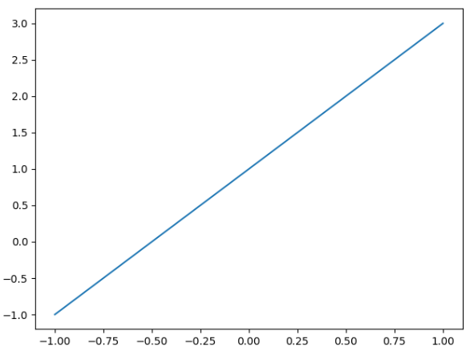
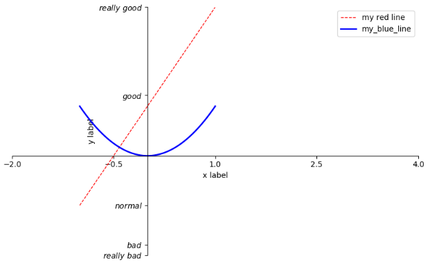

画简单的线条
画出简单的函数 $ y = 2*x + 1 $1
2
3
4
5
6
7
8import numpy as np
import matplotlib.pylot as plt
x = np.linespace(-1, 1, 50) # 主要是用来产生一组x数据
y = 2*x + 1 # 函数为 y = 2*x + 1
plt.figure() # 产生一个新窗口
plt.plot(x, y) # 画出y = 2*x + 1的图像
plt.show() # 显示结果
figure和plot的简单参数
仍然使用上面那个函数 $ y = 2*x + 1 $1
2
3plt.figure(num = 1, figsize=(8,5)) # 定义窗口编号为1，大小为(8,5)
plt.plot(x, y, color='red', linewidth=1.0, linestyle='--') # 颜色为红色，线宽度为1.0，曲线类型为虚线
plt.show()- 设置坐标轴
1. 限制坐标轴的范围1
2plt.xlim((-1, 2)) # 修改x轴
plt.ylim((-2, 3)) # 修改y轴
2. 添加标签1
2plt.xlabel('x label')
plt.ylabel('y label')
3. 自定义坐标轴的单位间隔以及内容- 使用新的区间以及单位间隔来替换
1
2new_tick = np.linspace(-2, 4, 5) # 新建一个区间[-2,4]，一共显示5个坐标
plt.xticks(new_tick)- 自定义任意间隔和内容的坐标轴
1
2
3
4# [-2, -1.8, -1, 1.22, 3]表示在坐标轴上显示的位置
# [r'$really\ bad$', r'$bad$', r'$normal$', r'$really\ good$']表示对应位置显示的内容
# 这里用了正则表达式，可以用来表示更多内容以及更多种数学符号
plt.yticks([-2, -1.8, -1, 1.22, 3], [r'$really\ bad$', r'$bad$', r'$normal$', r'$good$', r'$really\ good$'])
4. 去掉不想要的边框
$ \ \ \ \ $例如，这里我们不想要上面和右边这两条边框，那么怎么去掉？
$ \ \ \ \ $解决方法就是：将不想要的边框的颜色设置为’none’1
2
3
4ax = plt.gca() # 获取当前的坐标轴的信息
ax.spines['right'].set_color('none') # 设置右边的边框
ax.spines['top'].set_color('none') # 设置上面的边框
plt.show()
$ \ \ \ \ $可以看到，上面和右边那两个边框被去掉了
5. 调整坐标轴1
2
3# 设置x坐标
ax.xaxis.set_ticks_position('bottom') # 设置底部的x坐标
ax.spines['bottom'].set_position(('data', 0)) # 将x坐标移动到y=0的位置1
2ax.yaxis.set_ticks_position('left') # 设置坐标的y坐标轴
ax.spines['left'].set_position(('data', 0)) # 将y坐标轴移动到x=0的位置 - Legend图例
为了方便说明，这里我们画2条曲线，一条函数为$ y = 2*x + 1 $，另外一条为$ y = x^2 $，绘制方法在前面已经说明了，如下：
下面我们想要添加图例来标注这两条线段假如我们还想对图例进行进一步自定义的控制，如多个线有label，但是我只想显示其中一两条，然而自动生成的图例会生成所有带label的线的图例，而且，还可以根据自己的喜好重新命名而不用理会原有的label1
2
3
4
5
6
7# 需要获取红色线段和抛物线的对象
# a, = function() 表示function()会返回多个返回值，但是只拿第一个赋值给a
# 特别注意这里的label，是可以显示在legend上面的
line, = plt.plot(x, y1, color='red', linewidth=1.0, linestyle='--', label='red line')
circle, = plt.plot(x, y2, color='blue', linewidth=2.0, label='blue line')
# 然后根据label自动生成图例
plt.legend(loc='upper right')
1
2
3
4# handlers：需要添加进去图例的线段的实例
# labels：这些实例对应的label，自定义的
# loc：位置，这里是右上方
plt.legend(handles=[line, circle], labels=['my red line', 'my_blue_line'], loc='upper right')
另外，loc参数如下：
其中，’best’代表自动分配最佳位置，尽量不遮挡原图形- ‘best’
- ‘upper right’
- ‘upper left’
- ‘lower left’
- ‘lower right’
- ‘right’
- ‘center left’
- ‘center right’
- ‘lower center’
- ‘upper center’
- ‘center’
- Annotation标注
原始图像：
1. 画垂直的虚线
$ \ \ \ \ $比如，这里我们想做一个如下的标注：
$ \ \ \ \ $我们可以看到，这种标记其实还是用了前面的知识，这里我们需要一个垂直的虚线以及$ \ \ \ \ $在直线上的一个点，实现如下：1
2
3
4
5x0 = 1
y0 = 2*x0 + 1
plt.plot([x0, x0], [0, y0], 'k--', linewidth=2.5) # 画线
# 表示x的范围从x0~x0；y的范围为0~y0；'k--'表示黑色的虚线，k为黑色，--为虚线；
plt.scatter(1, 1*2+1, s=50) # 画点
2. 添加标注的两种方法<font size=4 face="黑体">$ \ \ \ \ $1. 使用annotate进行标注</font>1
2
3
4
5plt.annotate(
r'$2x+1=%s$'%y0, xy=(x0, y0), xycoords='data', xytext=(+30, -30),
textcoords='offset points', fontsize=16,
arrowprops=dict(arrowstyle='->', connectionstyle='arc3, rad=0.2')
)
$ \ \ \ \ $参数解释：
$ \ \ \ \ \ \ \ \ $1. ‘….’：要标注上去的text，这里是2x+1=3
$ \ \ \ \ \ \ \ \ $2. xy=(x0,y0)：要标注的点的坐标
$ \ \ \ \ \ \ \ \ $3. xycoords=’data’：使用我们data的坐标系
$ \ \ \ \ \ \ \ \ $4. xytext=(-30,30)：text要展示的左上角的坐标
$ \ \ \ \ \ \ \ \ $5. textcoords=’offset points’：标注文字的坐标系是根据要标注的点的位移，比如这$\ \ \ \ \ \ \ \ \ \ \ \ $里就是那个点(x0+30, y0-30)的位置
$ \ \ \ \ \ \ \ \ $6. fontsize：字体大小
$ \ \ \ \ \ \ \ \ $7. arrowprops：箭头的参数。用一个字典dict来表示
$ \ \ \ \ \ \ \ \ \ \ \ \ $7-1. arrowstyle：箭头的样式，’->表示箭头’
$ \ \ \ \ \ \ \ \ \ \ \ \ $7-2. connectionstyle：指向标注点的样子，是直线，弧线等等。arc3表示弧线，$\ \ \ \ \ \ \ \ \ \ \ \ \ \ \ \ \ \ \ \ \ \ \ \ \ \ \ \ \ \ \ \ \ \ \ \ \ \ \ \ \ \ \ \ \ \ \ \ \ \ \ $rad=0.2表示角度为0.2弧度
$ \ \ \ \ $2. 使用text进行标注1
plt.text(-3.7, 3, r'$This\ is\ an\ annotion.\ \mu\sigma_i\alpha_j$', fontdict={'size: 16', 'color': 'red'})
$ \ \ \ \ $参数解释：
$ \ \ \ \ \ \ \ \ $1. -3.7：标注的x坐标
$ \ \ \ \ \ \ \ \ $2. 3：标注的y坐标
$ \ \ \ \ \ \ \ \ $3. text：标注的内容，正则表达式
$ \ \ \ \ \ \ \ \ $4. text的样式，是一个字典，可以有size，color等等 - tick能见度
首先，我们画了一个这样的图像：
可以看到图像和坐标轴之间是有遮挡的，我们可以设置x，y的透明度来使得x，y轴清晰，遮挡没那么严重1
2
3
4# 通过ax.get_xticklabels()和ax.get_yticklabels()来获取x，y坐标轴的标记
for label in ax.get_xticklabels() + ax.get_yticklabels():
label.set_fontsize(12) # 设置坐标轴标记的大小
label.set_bbox(dict(facecolor='white', edgecolor='None', alpha=0.7, zorder=2)) # 设置坐标轴标记的bbox（透明度等属性）
$ \ \ \ \ $set_bbox参数中的字典内容解释：
$ \ \ \ \ \ \ \ \ $1. facecolor：前景色
$ \ \ \ \ \ \ \ \ $2. edgecolor：边框颜色，这里是’None’，即无边框
$ \ \ \ \ \ \ \ \ $3. alpha：透明度
$ \ \ \ \ \ \ \ \ $4. zorder：层叠顺序，默认zorder为1，这里设置为2，则可以显示在线段上面
Xinle Dai
搜索
Recording my study
Matplotlib的基本使用